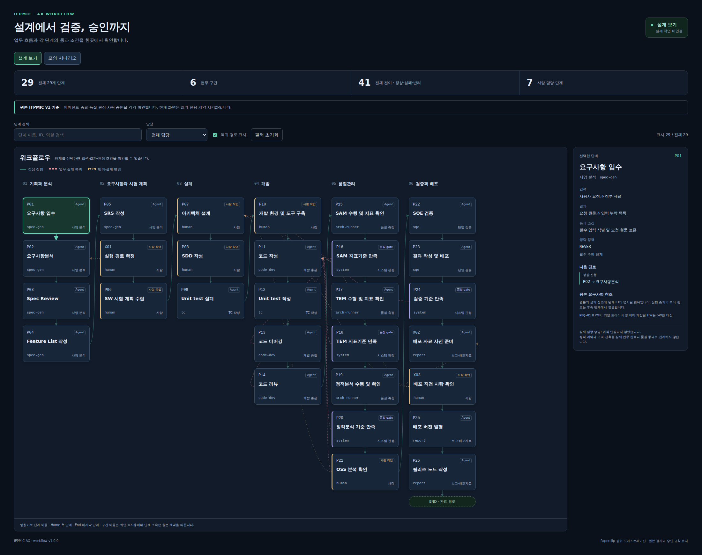
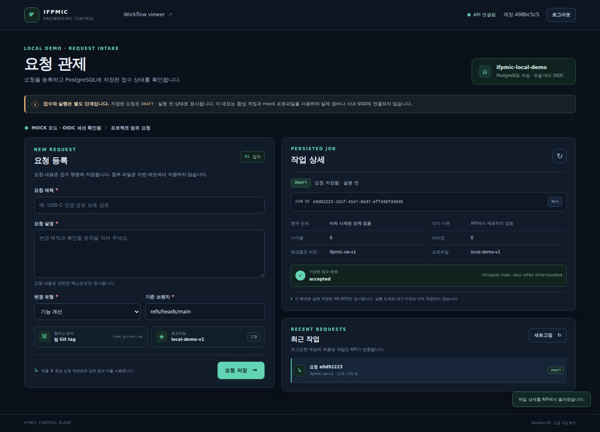

전체 workflow를 탐색합니다
29단계 · 6구간 · 41연결 · 74개 모의 시나리오


IFPMIC AX / 진행 현황 · 2026-10-21 KST 기준 정적 기록
기준: 기존 AX 자료와 IFPMIC 설계 · 오케스트레이션 참고: Paperclip
12.5%
필수 단계 2 / 16 완료
단계 수를 같은 비중으로 센 값입니다. 작업량·남은 시간 추정치가 아닙니다. 실제 업무 실행과 최종 인수는 미완료입니다.
29단계 · 6구간 · 41연결 · 74개 모의 시나리오

로그인 → 등록 → 목록·상세 → 새로고침 유지

저장 요청 → 실제 실행 엔진 접수 → 같은 작업의 run / receipt / QUEUED 표시
완료 기준: 정상 접수 · 중복 방지 · 권한 오류 · 새로고침 유지. QUEUED는 접수 상태입니다.
현재: 140개 합성 단위 검사 수용. 실제 490개 통합 검증은 미실행이며 실행 연동 화면은 아직 없습니다.
다음 작업: 이 장애를 수정·재검증하고 실행 전 검토를 마친 뒤 실제 통합 검증과 화면 연결을 진행합니다. 사람·품질·장비·배포와 원래 AT32 인수는 이후에도 남습니다.